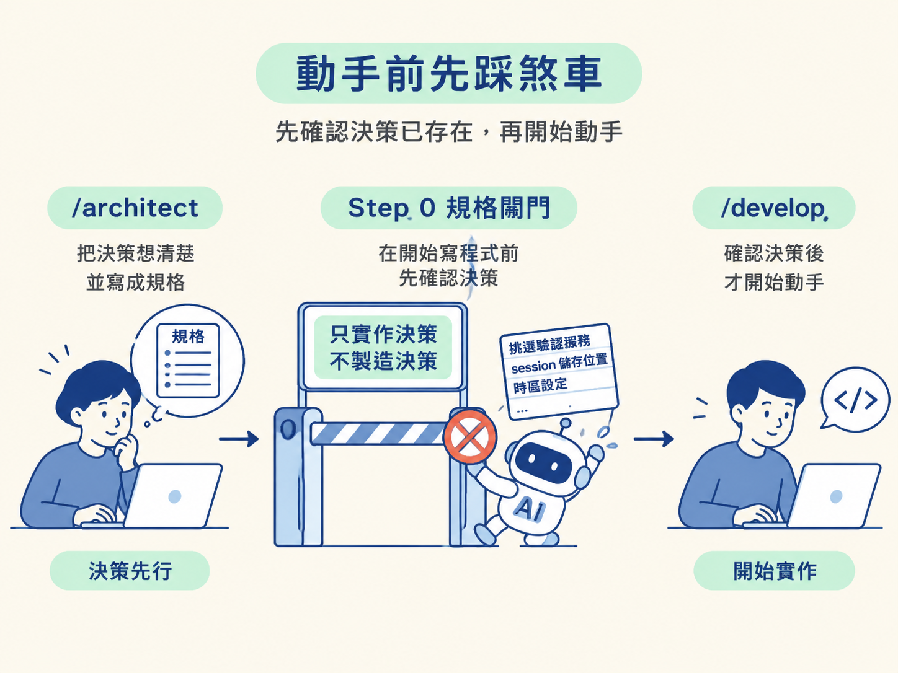
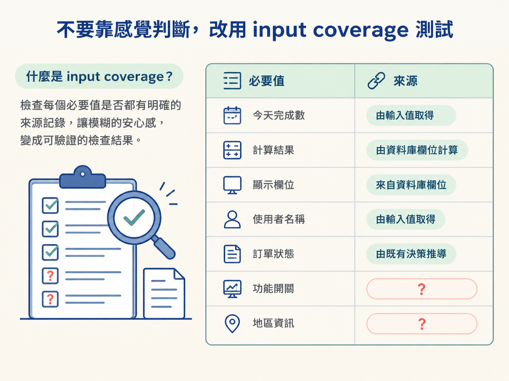
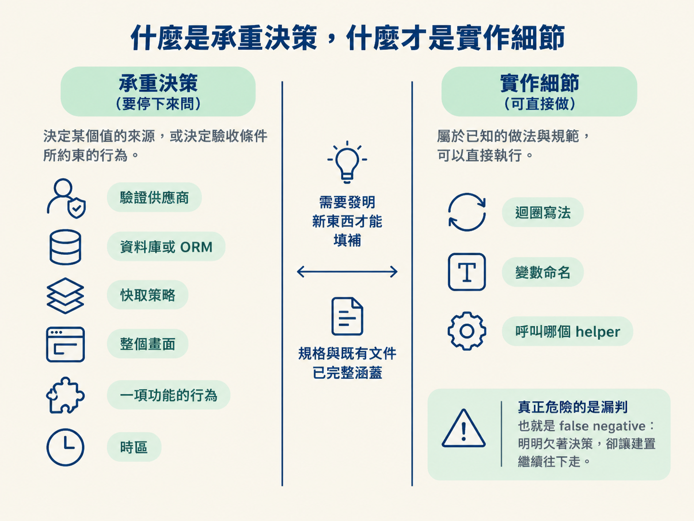
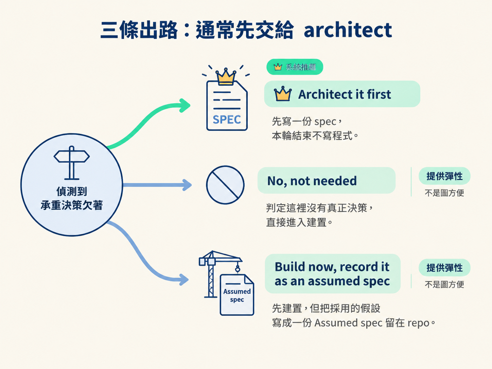
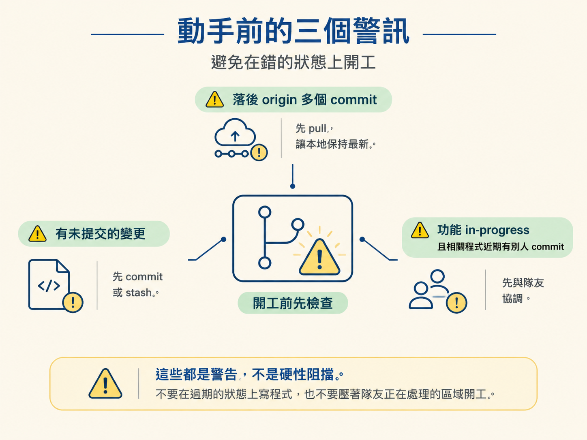

完成 /develop 的 Step 0 規格閘門：用 input coverage 測試找出尚未決定的事項，分辨哪些選擇會影響整體行為、哪些只是局部實作細節，並在需要時選擇正確的三條出路。
你剛跑完 /architect，手上應該已經有一份說明做法的規格。接著輸入 /develop 做登入頁，照理說就能開始寫程式了。但這個流程偏偏先踩一下煞車，問一個看似簡單、其實很關鍵的問題：「這裡有沒有哪個決策，其實還沒被想過？」
這聽起來像是在拖延進度，但它正好攔住 AI 寫程式最容易出錯的時刻。模型很擅長把重要選擇包裝成「只是接線」：自行挑一個驗證服務、決定 session 要存在哪裡，或決定使用者看到的「今天」要採用哪個時區。
這些選擇都會改變系統行為，卻不一定會被明確標成「決策」。它們可能在寫碼時悄悄發生，最後只剩在對話裡，沒有留下清楚的記錄。
幾週後重新打開這個 repo，可能沒人知道當初為什麼選了這家供應商；下一次換個 session 重跑，模型也可能做出另一個選擇。/develop 的 Step 0 規格閘門，就是用來堵住這道縫。
它只守一條核心原則：這個階段只實作決策，不製造決策。決策應該先在 /architect 被想清楚、寫下來，/develop 才負責動手。

判斷是否還欠一個決策時，最容易犯的錯就是靠直覺。你問模型：「我是不是正在發明東西？」它很可能回答：「沒有，我只是把既有元件接起來。」問題在於，模型非常會替自己的選擇找理由。
因此，這裡採用一套刻意機械化、很難自我說服的檢查方式，叫做 input coverage（輸入覆蓋）：
列出這次建置必須產生、計算或顯示的每一個值。這些值要從驗收條件與規格中的設計推出來。接著逐一詢問：規格是否指名了它的來源？來源可以是某個輸入、某個資料庫欄位、從某個已命名值推導而來，或是某個先前已做出的決策。只要有一個必要值的來源沒有被指名，就代表有一個決策尚未完成。
這項測試的重點，不是你主觀上覺得「應該沒問題」，而是每個必要值的來源是否真的有文字記錄。它把模糊的安心感，換成一個清楚的檢查結果：這個值的來源欄位是空的。

假設規格裡有一條驗收條件：首頁要顯示「使用者今天完成的待辦數」。為了計算「今天」，你想到可以讀取使用者最後一次上線資料中的時區，再用它決定日期。
這個做法聽起來很合理，也很容易被歸類成實作細節。但用 input coverage 檢查後，問題就浮現了：「今天」是畫面必須顯示的值；至於它要根據哪個時區計算，規格並沒有說清楚。要用使用者時區、伺服器時區，還是要處理 DST，也都會影響結果。
因此，這不是普通的接線工作。它決定了驗收條件所約束的值要從哪裡來，屬於 load bearing（承重）決策。若你自行選定，就等於代替 /architect 做了決策。
先把界線劃清楚，後面的判斷就會快很多。
| 承重（決策欠著，要停） | 實作細節（可直接做） | |
|---|---|---|
| 本質 | 決定某個值的來源，或決定一條驗收條件所約束的行為 | 在規格已經指名的來源中選擇實作方式 |
| 例子 | 驗證供應商、資料庫或 ORM、快取策略、整個畫面、一項功能的行為 | 迴圈寫法、變數命名、呼叫哪個 helper |
| 判斷法 | 必須「發明」一個新東西才能填上空缺 | 規格、design.md、AGENTS.md 已經完整涵蓋 |
有些情況則明確屬於純實作，可以直接進行：修正一個小 bug、依照既有 design.md 建立元件、把規格已經指名來源的零件接起來，或修改一句文案。
反過來，只要某個必要值的來源是空的，或你自己也說不準，就把它視為欠決策，進入詢問流程。寧可多問，也不要漏掉一個決策。這個階段真正危險的是漏判，也就是 false negative：明明欠著決策，卻讓建置繼續往下走。

在決定要不要詢問之前，依序檢查三件事。這個範圍要保持窄一點：只讀這項功能需要的文件，不要把整棵 docs/ 樹都翻過一遍。
docs/scope/<workspace>/ 找對應套件的檔案，再從 At a glance 表格找到這項功能的段落。如果段落寫著 needs a decision，卻沒有 spec 指標，表示決策欠著，而且檔案也缺了。若檔案格式損壞，應該回報並詢問，不要自行猜測。spec 指標，打開負責治理它的規格。 只讀這份規格的建置段落，後面的 step 2 會再說明其中包含哪些內容。找到之後，它就是本次建置要依據的規格。若沒有指標，也沒有連結到任何規格，才到 docs/specs/<workspace>/ 針對性尋找與功能相符的檔案，絕不要整批讀取。AGENTS.md，因為決策可能已經記在裡面。 例如，之前的功能若已經同步記錄「驗證供應商早就選好了」，這次就不需要重新開一份 spec，可以直接建置。三關都檢查完，如果決策確實欠著，而且沒有任何記錄，就不要猜，也不要默默完成。此時要用單選面板把選擇交還給你。
面板應該指出具體缺少哪個承重選擇，例如：「這看起來需要先做一個架構決策：要使用哪個驗證供應商，以及哪種 session 模型？」接著提供三條出路。
| 選項 | 它做什麼 | 什麼時候用 |
|---|---|---|
| Architect it first | 先把決策寫成一份 spec，再回來建置。系統推薦這個選項，並在本輪結束，不寫任何程式碼。 | 這確實是承重決策，而且值得先被完整想清楚 |
| No, not needed | 你判斷這裡沒有真正的決策，直接進入建置流程。 | 你確定這只是純實作 |
| Build now, record it as an assumed spec | 先建置，但先把採用的假設寫成一份 Assumed spec，讓決策留在 repo 裡。 | 你現在就必須往前走，但不希望決策只存在對話中 |
系統永遠推薦第一個選項，理由很直接：/develop 的職責是實作決策，決策本身的品質則應該在 /architect 階段處理。
另外兩個選項是提供給你的彈性，不是讓 AI 可以圖方便。你可以判斷某項選擇根本不構成決策，也可以在確實需要前進時，先留下明確的假設。

第三條出路特別實用，因為它處理了「現在得先做，但這個決策還沒正式審過」的情況。
選擇它之後，/develop 會在建置前先寫一份最小規格。這是它在整個流程中唯一擁有的 spec 寫入權。它會按照 /architect 的規則決定檔案放置位置與編號，並寫入以下欄位：
Assumed。/architect 補審。寫完後，feature 的 scope 指標會指向這份檔案。從此，這個假設就不會只活在當前對話裡：它能通過 /clear，隊友也讀得到，下一次執行 /develop 時會照著它建置，而不是重新猜一次。
有兩件事容易搞錯。第一，這份假設的狀態會一直保持在 Assumed；/develop 不能把它推進，只有 /architect 審議通過後才能清掉。第二，它不會阻擋 done。功能仍然可以標記完成，只是旗子會持續亮著，提醒大家這個決策還沒有正式審查。
規格閘門還會順手檢查專案當下的狀態。這些檢查以使用 git、而且不是單人離線環境為前提；若不符合前提，就會安靜跳過。
首先，它會執行一次 git fetch。比較基準會優先使用 main，沒有才使用 master。接著檢查兩件事：目前落後了幾個 commit，以及工作區是否有未提交的變更。
| 訊號 | 它會警告你 |
|---|---|
| 落後 origin 多個 commit | 你可能正要在舊狀態上開工，隊友也許已經修改或發布了內容；先 pull 再執行。 |
| 要碰的區域有未提交變更 | 先提交或 stash 這些變更，避免本次建置和它們混在一起。即使你堅持繼續，流程仍然會讓你做下去。 |
| 功能是 in-progress，且相關程式近期有別人 commit | 這項功能看起來已經有人在建置，應先協調再繼續。 |
這些都是警告，不是硬性阻擋。但它們會把風險攤在你面前。背後的原則很簡單：不要在過期的狀態上寫程式，也不要壓著隊友正在處理的區域開工。

最後還要查看最近的 AGENTS.md。如果其中的 ## Git 設定了 integration: on，建置前就要先開分支。這項設定的具體運作方式，會在收尾的步驟一起說明。
/develop只實作決策，不製造決策。Step 0 透過機械化的 input coverage 測試，判斷是否有決策欠著：列出每個必要值，再檢查規格是否指名它的來源；沒有指名，就是欠著。承重決策的判準是「決定某個值的來源，或決定驗收條件所約束的行為」，不在於事情表面上看起來大不大；只有純實作才能直接進行。決策欠著時，面板推薦先交給/architect，另外兩條路則是判斷不需要決策，或先寫一份 Assumed spec 再建置。Assumed spec 是/develop唯一能寫入的 spec 類型，狀態固定為 Assumed，不會阻擋 done，只有/architect能完成後續清理。開工前還會檢查落後的 commit、未提交變更，以及隊友是否正在處理相同區域；這三者都是警告，不是硬性阻擋。
規格閘門通過後，才真正進入工作階段。下一步要判斷這次要做的是畫面、邏輯，還是兩者都有；也要決定如何載入規格與慣例，以及寫碼前應該先探索哪些內容。下一節會完整走過「分軌、載入、探索後動手」的流程。